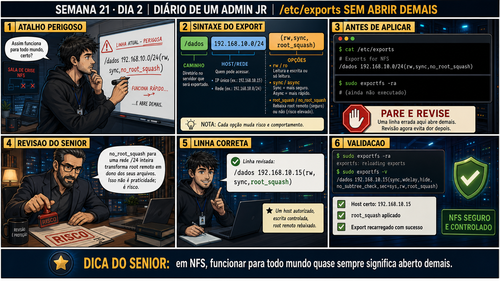

Semana 21 · Dia 2 | Nível Júnior — Redes
NFS: Exports e Permissões
quem pode montar e o que pode fazer depois de montado são duas decisões separadas
ANTES DE ALTERAR, OBSERVE. DEPOIS DE ALTERAR, VALIDE.
1. O chamado
#2102
PRIORIDADE ALTA
11:40
aberto por: segurança da informação
host: srv-files-04 · serviço: compartilhamento NFS de uploads
"Exportei /dados/uploads pra rede inteira com permissão de escrita — e agora qualquer máquina que se conectar na rede, inclusive convidados do Wi-Fi, consegue apagar arquivos dos outros."
O problema está no /etc/exports. O que você corrige primeiro?
💡 Passa o mouse nas palavras destacadas pra ver uma dica rápida — clica se quiser a explicação completa com analogia.
2. Antes de ver as opções — tenta responder
🧠 Recall ativo: numa linha de /etc/exports como /dados/uploads 10.10.10.0/24(rw,sync), quais são
as duas decisões de segurança separadas sendo tomadas ali?
Primeira decisão: QUEM pode montar — definido pela faixa de rede/IP entre parênteses (10.10.10.0/24
nesse exemplo). Segunda decisão, completamente separada: O QUE pode fazer depois de montado — rw
(leitura e escrita) vs.
ro
(só leitura). Restringir a rede não implica restringir a permissão, e vice-versa — as duas precisam ser
pensadas juntas, mas são configuradas de forma independente na mesma linha.
3. Questão comentada — clica numa alternativa
Você precisa que só os três servidores de aplicação (10.10.10.21, .22 e .23)
consigam escrever em /dados/uploads, e mais nenhuma outra máquina da rede 10.10.10.0/24 tenha acesso nenhum.
Qual linha de /etc/exports resolve isso corretamente?
💡 Analogia do Sênior para Fixar: O princípio fundamental de 02 NFS EXPORTS PERMISSOES é como o alicerce de sustentação de um viaduto: garante que a estrutura de comunicação suporte alto tráfego sem colapsar.
4. Decodificador de conceitos
Clica em qualquer termo pra ver a definição completa e uma analogia do dia a dia:
5. Ferramentas e leitura da evidência
| Opção | O que faz |
|---|---|
rw / ro | Permite leitura+escrita, ou só leitura. |
sync / async | sync confirma a escrita em disco antes de responder ao cliente; async responde antes, com risco em queda. |
no_root_squash | Desativa o root squash padrão — só usar com justificativa clara. |
--- /etc/exports corrigido do chamado #2102 --- /dados/uploads 10.10.10.21(rw,sync,no_subtree_check) /dados/uploads 10.10.10.22(rw,sync,no_subtree_check) /dados/uploads 10.10.10.23(rw,sync,no_subtree_check) $ sudo exportfs -ra # reaplica o arquivo /etc/exports sem reiniciar o serviço $ exportfs -v /dados/uploads 10.10.10.21(rw,sync,wdelay,no_subtree_check) /dados/uploads 10.10.10.22(rw,sync,wdelay,no_subtree_check) /dados/uploads 10.10.10.23(rw,sync,wdelay,no_subtree_check) --- tentativa de acesso de uma máquina fora da lista --- $ showmount -e 10.10.10.50 Export list for 10.10.10.50: /dados/uploads 10.10.10.21,10.10.10.22,10.10.10.23 ← IP de fora não aparece
5.1 O painel 4 da prancha de hoje mostra o técnico rodando exportfs -ra depois de editar /etc/exports, em vez de reiniciar o serviço nfs-server
Um colega acha que qualquer mudança em /etc/exports exige reiniciar o serviço NFS inteiro pra ter efeito.
Por que exportfs -ra é geralmente preferível a reiniciar o serviço nfs-server
inteiro depois de editar /etc/exports?
💡 Analogia do Sênior para Fixar: Diagnosticar anomalias em 02 NFS EXPORTS PERMISSOES é como o eletricista usando o multímetro no quadro de disjuntores: mede a passagem de sinal no ponto exato da falha.
5.2 "Se eu escrever /dados/uploads 10.10.10.21(rw) 10.10.10.22(ro), sem espaço entre eles, funciona igual?"
Um colega escreve acidentalmente /dados/uploads 10.10.10.21 (rw) — com um espaço antes do parêntese, que não deveria existir.
Por que um espaço extra entre o IP e o parêntese de opções em /etc/exports pode
mudar completamente o comportamento da linha?
💡 Analogia do Sênior para Fixar: Aplicar as boas práticas de 02 NFS EXPORTS PERMISSOES é como o protocolo de segurança da aviação: elimina pontos únicos de falha e garante previsibilidade operacional.
6. Procedimento profissional
- Antes de exportar, decida separadamente: quem pode montar (rede/IP) e o que pode fazer (rw/ro).
- Restrinja a rede/IP ao mínimo necessário — evite faixas amplas quando IPs específicos bastam.
- Use rw só onde escrita é realmente necessária; prefira ro por padrão.
- Não escreva espaço entre o IP e o parêntese de opções em /etc/exports.
- Após editar, use exportfs -ra pra reaplicar sem derrubar conexões existentes.
7. Laboratório guiado — marca conforme for testando
Segurança: execute os testes apenas em VMs descartáveis e confirme nomes de discos, hosts e arquivos antes de cada comando.
- CENÁRIOAção: Prepare o pacote e o diretório de teste, e confirme o serviço NFS de pé — os passos seguintes são sobre ESCREVER e testar linhas de /etc/exports, então essa base não deve tomar tempo da aula.sudo apt install -y nfs-kernel-server nfs-common sudo mkdir -p /dados/uploads /mnt/uploads sudo systemctl enable --now nfs-kernel-server
🔍 Detalhar esse comando
- systemctl enable
- Marca o serviço para iniciar automaticamente em todo boot futuro.
- --now
- Além de habilitar pro futuro, já inicia o serviço agora, nesta sessão — economiza um segundo comando separado.
- nfs-kernel-server
- O serviço que efetivamente compartilha os diretórios exportados pela rede.
Resultado esperado:systemctl status nfs-kernel-servermostraactive (running)— o serviço está de pé, pronto pra você escrever a linha de /etc/exports no próximo passo.Por que fizemos isso: sem o serviço e o diretório já existindo, você perderia tempo de aula resolvendo pré-requisito em vez de praticar export e permissão, que é o ponto de hoje.Cilada comum: só em VM descartável — e não rode isso numa máquina que já tem um servidor NFS de produção configurado.Se o seu resultado foi diferente
"Failed to enable unit: Unit file nfs-kernel-server.service does not exist" → em algumas distros o serviço se chamanfs-server— tentesudo systemctl enable --now nfs-server. - Edite /etc/exports numa VM servidor de laboratório, restringindo o acesso a um único IP de cliente específico, com rw.Resultado esperado: exportfs -v mostrando só aquele IP autorizado.
- Tente montar de uma segunda VM, fora da lista autorizada, e observe o erro.Resultado esperado: mount falhando com erro de permissão ou acesso negado.🧑🏫 Aqui entra o Mentor (em breve): se a mensagem de erro parecer genérica demais, este é o ponto onde o chat com o Sênior-IA vai te ajudar a interpretar exatamente o que ela significa.
- Mude a opção de rw pra ro no export, reaplique com exportfs -ra, e tente escrever um arquivo do cliente autorizado.Resultado esperado: escrita falhando com erro de sistema de arquivos somente leitura.
- Deliberadamente insira um espaço extra antes do parêntese numa linha de teste, reaplique, e observe o efeito.Resultado esperado: comportamento de acesso mais amplo do que o pretendido, confirmando a armadilha de sintaxe.
- CENÁRIOAção: Remova o export e o diretório de teste, e confirme que a máquina não ficou com nenhuma linha de exports de laboratório esquecida.sudo umount /mnt/uploads sudo sed -i '/uploads/d' /etc/exports sudo exportfs -ra exportfs -v sudo rm -rf /dados/uploads /mnt/uploads
🔍 Detalhar esse comando
- umount /mnt/uploads
- Desmonta o compartilhamento NFS antes de qualquer outra limpeza — evita erros de 'device busy' nos passos seguintes.
- sed -i '/uploads/d' /etc/exports
- Edita o arquivo de exports diretamente (in-place, -i), deletando (d) qualquer linha que contenha a palavra 'uploads'.
- exportfs -ra
- Reaplica (-r, reexport) todos (-a, all) os exports a partir do arquivo já editado, sem precisar reiniciar o serviço NFS.
- exportfs -v
- Lista (verbose) os exports atualmente ativos, pra confirmar visualmente que a linha de teste sumiu.
- rm -rf /dados/uploads /mnt/uploads
- Remove recursivamente e sem confirmação os diretórios de teste usados na aula.
Resultado esperado: exportfs -v sem nenhuma linha de /dados/uploads, e os diretórios de teste removidos.Por que fizemos isso: um export de teste esquecido com rede/IP mal pensado é exatamente o tipo de configuração que gera um chamado como o #2102 de verdade — desfazer o laboratório evita deixar pra trás o próprio erro que você acabou de estudar.Cilada comum: o umount pode reclamar "not mounted" se algum dos seus testes não chegou a montar — normal, ignore e siga pra remoção do export.
8. Validação e encerramento
- /etc/exports controla separadamente QUEM (rede/IP) e O QUE (rw/ro) cada linha permite.
- Restringir a rede não substitui restringir a permissão de escrita, e vice-versa.
- Espaço extra antes do parêntese muda o significado da linha, com efeito real de segurança.
- exportfs -ra reaplica mudanças sem derrubar conexões de outros clientes já montados.
Rollback e limites
Editar /etc/exports e rodar exportfs -ra é rápido e reversível — basta reverter a
linha e reaplicar de novo. O cuidado real é de segurança: um export rw aberto pra uma rede ampla demais pode
já ter permitido escrita indevida antes mesmo de você perceber o erro — vale checar logs de acesso, não só
corrigir a configuração daqui pra frente.
💡 Sobre repetição espaçada: "quem pode acessar" e "o que pode fazer" como
duas perguntas separadas é o mesmo padrão de permissões Unix (Semana 2) e de regras de firewall (Semana 15)
— vale reforçar esse padrão geral de controle de acesso. O Anki vai conectar os três.
9. Resposta final
Alternativa correta: A. Nesta aula, a correção foi declarar cada um dos
três IPs autorizados individualmente com rw, em vez de liberar a rede inteira. O ponto central do caso é
este: quem pode montar e o que pode fazer depois de montado são duas decisões separadas.
🔓 O que você desbloqueou hoje
Capacidade de escrever exports NFS seguros, controlando rede e permissão de
forma deliberada. Amanhã você aprende sobre UID/GID no NFS — por que um arquivo criado pelo cliente pode
aparecer com o dono "errado" no servidor, e como isso se relaciona com identidade de usuário entre máquinas
diferentes.